Inkscape’s Transparency feature gives you the
opportunity of adding a new dimension to your artwork that can exceed your
expectations and expand your imagination. You can create special effects using
the transparency and color blending features, such as combining different
blending modes and transparencies with clipping and masking tools.
In this tutorial, you’ll learn how to do the following:
Use the Transparency feature.
Change the opacity of objects.
Use color blending modes.
Use group options for transparency.
Use color and opacity masking.
Getting Started
In this lesson, you’ll add transparency to artwork in several ways.
You can vary the degree of transparency of an object’s fill or stroke (or
both), a group of objects, or a layer from 100% opacity (completely solid) to
0% opacity (completely transparent). When you decrease an object’s
opacity, the underlying artwork becomes visible through that object as if you
were working with stained glass.
Using transparency features, you can also create special effects, such as
knocking out underlying colors or creating graduated transparencies or blends.
Transparency can be applied to multiple objects, groups, and even to entire
layers. In this lesson you will focus on the transparency and color blending
features and their capabilities. Learn how to apply transparency to layers in
Lesson 7, "Working with Layers."
If you like, use the Zoom tool () to reduce the view of the finished artwork,
adjust the window size, and leave it on your screen as you work. (Use the
mouse wheel with and without pressing the <Shift> key to move the
artwork where you want it in the window.) If you don’t want to leave
the image open, choose File > Close.
To begin working, you’ll open an existing file set up for
experimenting with Inkscape’s transparency and color blending
features.
The artwork in this file contains four ungrouped pieces of artwork: a text
object and three individual wave images. You will apply different degrees of
transparency and color blending to each wave.
Choose File > Save As, name the file
RadioBlend.svg, store it in a convenient location, and click on the
Save button.
Applying Transparencies to Objects
Using the Select tool (), select the first wave on the left.
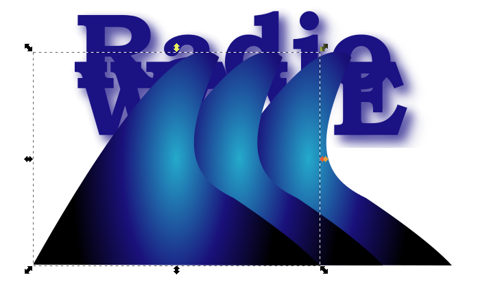
First wave selected.
Choose Object > Fill and Stroke > Fill
tab, and type 90 in the right end of the Opacity (%) sliding bar.
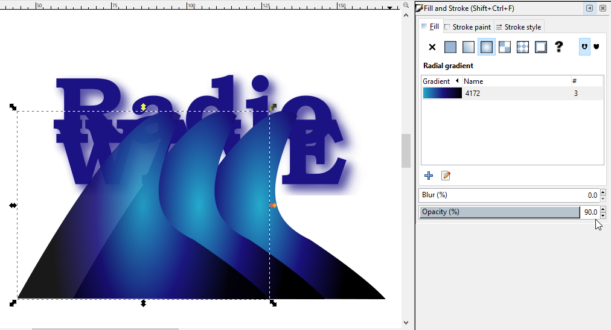
First wave set to 90 percent opacity.
You can just see text through the first wave.
Select the middle wave with the Select tool () and,
with the Fill and Stroke palette still open, move the Opacity (%)
sliding bar with the adjustment arrow () to 80.0. If you experience difficulty because of the
arrow’s sensitivity to movement, you can type in 80
<Enter>. The up and down arrows at the end of the bar also allow for
fine numerical adjustment.
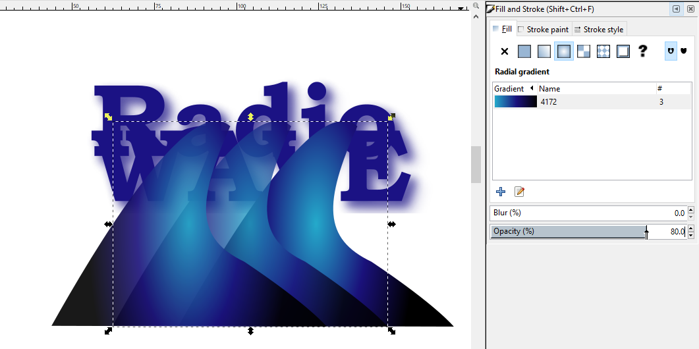
Second wave set to 80 percent opacity.
Text is relatively more visible through the second wave.
Select the third wave with the Select tool () and,
with the Fill and Stroke palette still open, move the Opacity (%)
sliding bar with the adjustment arrow () to 70.0 or by typing in 70 <Enter>.
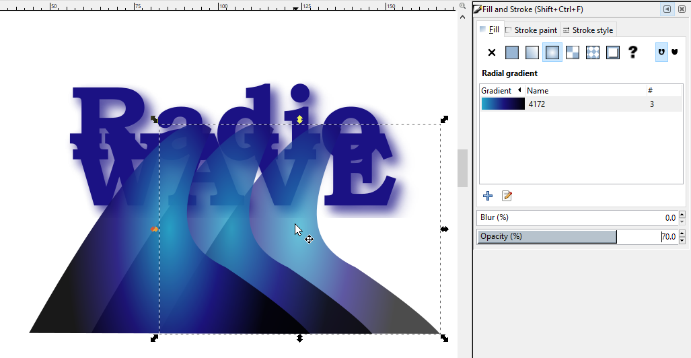
Waves at 90, 80, and 70 percent opacity,
respectively.
With each wave, the underlying text becomes more visible.
Choose File > Save. Keep the file open if you plan
to continue on to the next exercise.
Basic color blending and blending modes
Color blending works with layers to produce its visual effects. When an
object needs to have its own special see-through effect, it is best to have
that object in its own layer. Several objects that use the same blending mode
can be in the same layer for the sake of efficiency.
You will create a layer and move the leftmost wave to that layer to see how
blending modes work.
Creating a Layer for Each Wave
Click on the Layers icon () in the Command menu bar.
Click on the Add layer plus sign icon () to create a new layer.
When the Add Layer dialog box appears, type Right wave
in the Layer name text box, keep the Position as Above
current.
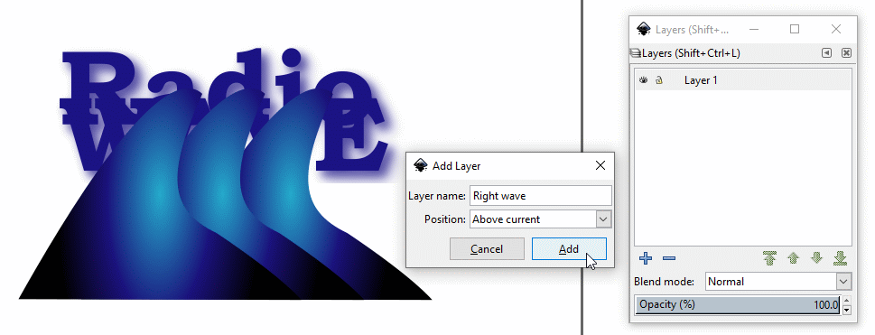
Layer created for the rightmost wave.
Click on the Add button.
Type Middle wave in the Layer name text box and keep
the Position as Above current.
Repeat the last couple of steps to create a layer for the leftmost
wave and label it appropriately.
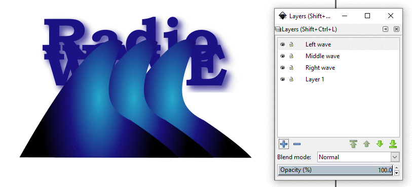
Layers created for all three waves.
Type Middle wave in the Layer name text box and keep
You will now move each wave into its own layer.
With the Select tool (), click on the rightmost wave. Note that it
is currently located in Layer 1.
Press <Shift>-<PgUp> to move the wave into the Right
wave layer.
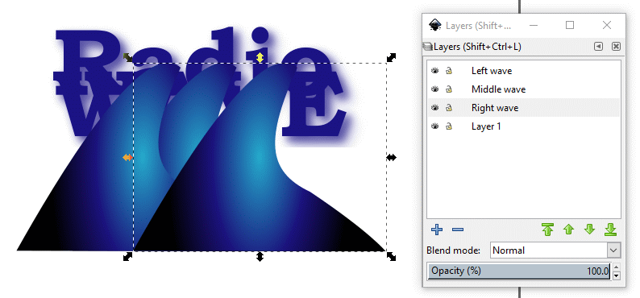
The rightmost wave is now in its own layer.
See that the Right wave layer bar is now highlighted and the
selected wave has moved to the front. That won’t last for long.
Click on the middle wave and then press <Shift>-<PgUp>
twice to highlight the Middle wave layer bar. The middle wave now
resides in its proper layer.
Repeat the last couple of steps for the leftmost wave, except press
<Shift>-<PgUp> three times to move it into the Left wave
layer.
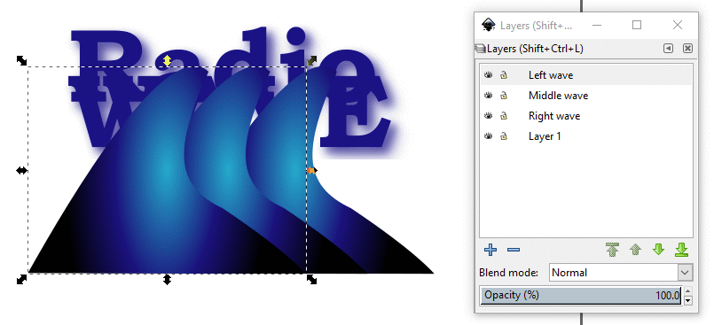
Each wave is now in its own layer.
Note how the waves are now in their original stacking order.
With each wave in its own layer, we can explore color blending.
Exploring color blend modes
Multiply
Select the left wave if it isn’t already selected. The Left
wave layer bar Layers panel should be highlighted. Click on the arrow
at the right end of the Blend mode options bar and select
Multiply from the dropdown option list.
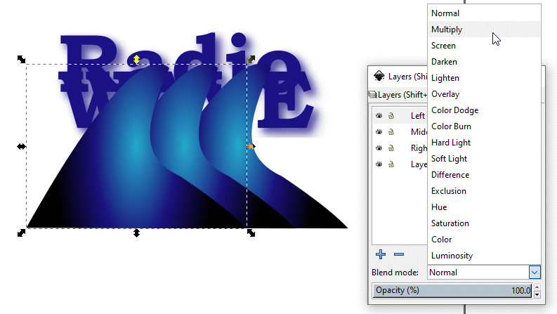
Select Multiply from the Blend Mode dropdown
list.
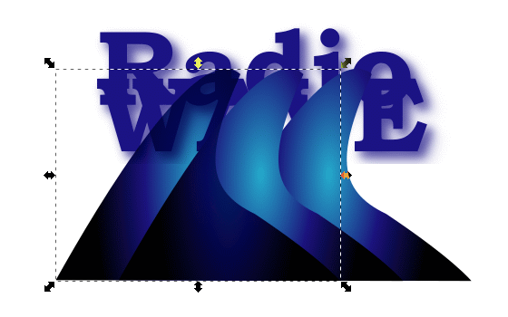
Result of applying the Multiply color blend mode to the
leftmost wave.
Multiply multiplies the underlying color with the overlapping
object’s color. The result is always a darker color. Multiplying any
color with black produces black. Multiplying any color with white leaves the
color unchanged. The effect is similar to drawing with multiple magic markers.
This blending mode is used often for drop shadows.
Difference
Select the middle (the Middle wave layer bar highlights),
select Difference from the dropdown option list.
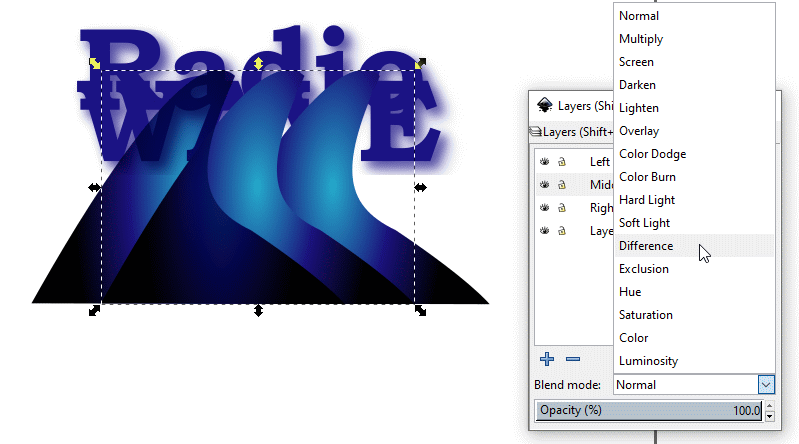
Select the Difference blending mode.
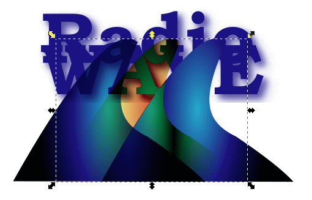
Result of applying the Difference color blend mode to the
middle wave.
Difference creates the effect of seeing underlying objects as a
color film negative. Using it subtracts either the overlaying color from the
underlying color or the underlying color from the overlaying color, depending
on which one has the greater brightness value. Blending with white inverts
the underlying color values; blending with black produces no change.
Screen
Select the left wave, then select Screen from the Blend
mode dropdown option list.
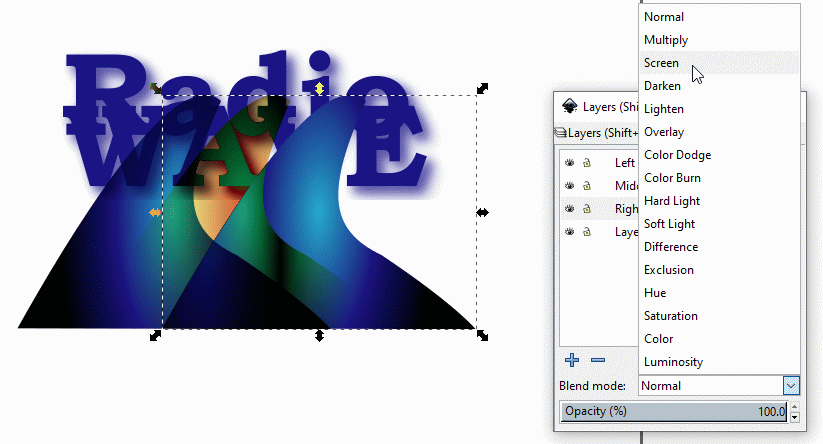
Select the Screen blending mode.
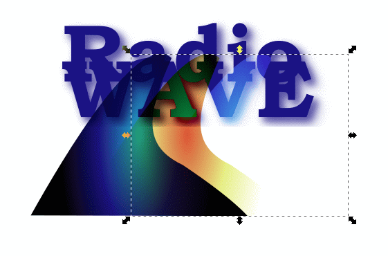
Result of applying the Screen color blend mode to the
right wave.
Screen multiplies the inverse of the overlying and underlying
colors. The resulting color is always a lighter color. Screening with black
leaves the color unchanged, and screening with white produces white. The
effect is similar to projecting multiple slide images on top of each
other.
As you can see, the portion of the right wave that overlies the white
background is invisible. Only the top portion that overlies the background
text shows.
File > Save and File > Close.
Experiment with the other blending modes available in the dropdown list.
If you want to undo a color blend, click on the object and then choose
Normal from the Blend mode dropdown list in the Layers palette.
Making an Opacity Mask
In this section, you will make a copy of the logo at the beginning of this
tutorial. When you look at the logo closely, you will see that it is
composed of four layers: one containing small type, one containing the wave
shapes, one containing stripes, and one containing large type. You will start
by creating the layer that houses the small type.
Choose File > Save As…, name the file
RadioWave.svg, find a convenient storage location, and click on the
Save button.
Choose File > Import…
Locate, select the PDF file numbers.pdf, and click on the
Open button. The PDF Import Setting dialog box appears.
Move the Precision of approximating gradient meshes slider to
the extreme left (1.0). We don’t need extreme precision in this
graphic.
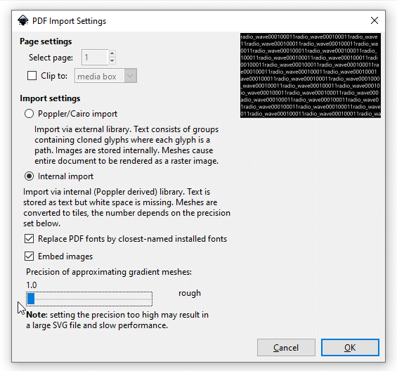
PDF Import Settings dialog box. Mesh precision set to
1.0
Click on the OK button. The imported graphic is placed where
the cursor is located.
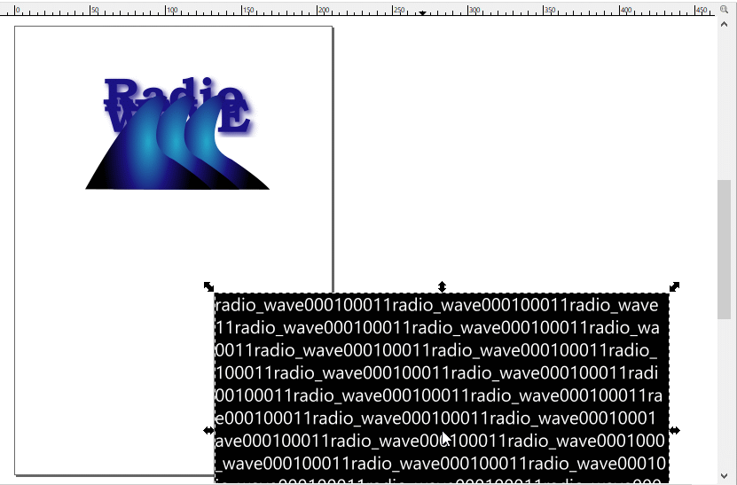
PDF imported and placed where the cursor is
located.
Move the PDF import and resize it smaller so it’s about the
same size as the logo artwork.
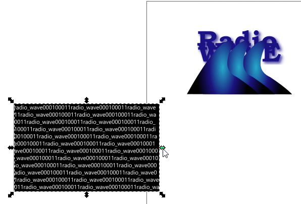
PDF moved and resized.
Group-select (marquee-select or use <Shift>-click) the three
waves, duplicate them (<Ctrl>-D or choose Edit >
Duplicate), and move the copies down from their original
position.
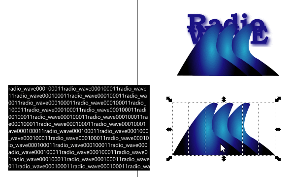
Move the duplicated waves.
Move the imported small text to behind the copied waves. If the
text lies ontop of the waves, there is no problem, as you will see in the
next step.
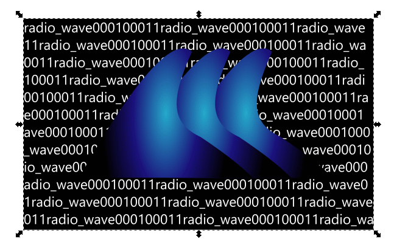
Move the imported small text image to behind the duplicated
waves.
With the small text image still selected, click on the Raise
selection to top icon () in the Tool Controls
Bar. The text moves to the top of the wave-text stack, ready to be used as
a mask. The waves are positioned underneath. They are visible if you choose
View > Display mode > Outline.
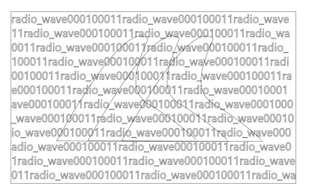
Small text and waves visible in Outline view.
If you went to Outline view, go back to Normal view.
Group-select the text image and waves (you can’t help but select
both) and choose Object > Mask > Set. After a
couple of seconds of image processing, the combined area of waves appear
with lettering taking on the color of the waves.
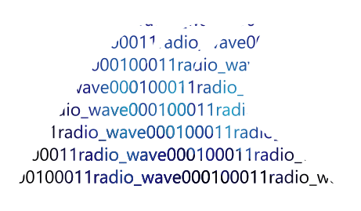
Result.
In the Layers panel, add a new layer and label it Small
text. Then, select the masked text image and move it into the Small
text layer. Lock the Small text layer.
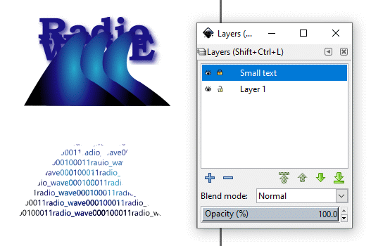
Masked text moved into its own layer and the layer is
locked.
Make another grouped duplicate of the three waves in the logo and
bring that grouped object down so it sits directly ontop of the small text
object. Placement does not have to be exact at this point.
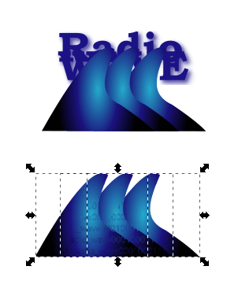
New wave duplicate moved to ontop of masked text
object.
Create a new layer and label it Transparent waves.
Group-select the waves and move them into the Transparent waves
layer. Then, select Multiply for the Blend mode.
New wave duplicates moved into own layer and Multiply
blend mode applied to whole layer.
Next, you’ll apply different degrees of opacity to each
wave. Select the right-hand wave and set Opacity (%) to 20.0
in the Fill and Stroke palette.
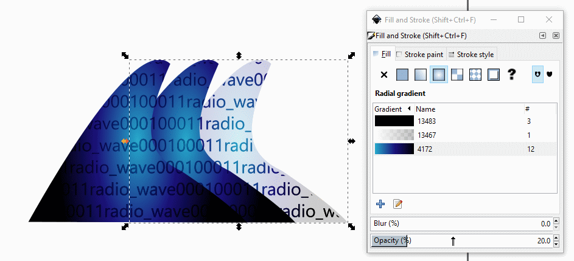
Right wave set to 20 percent opacity.
Set the middle wave’s opacity to 50 percent and the left
wave’s opacity to 80 percent.
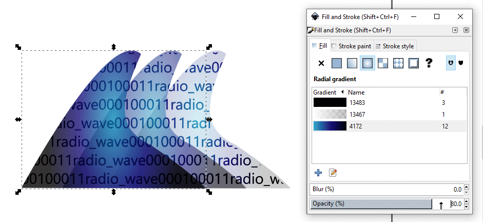
The middle wave is set to 50 percent opacity and the left
wave is set to 80 percent opacity.
Deselect the wave or waves and lock the Transparent waves
layer.
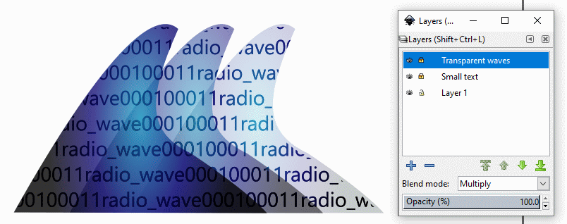
Lock the Transparent wave layer.
Before the large logo text is put into place, you’ll create and
add a decorative stripe pattern. First, choose View > Page
Grid. The grid will help you measure out the design. Then, increase
the magnification of the area to the upper left of the left wave.
If the Snap Controls Bar isn’t active, choose View >
Show/Hide > Snap Controls Bar. Select the Enable
Snapping (%) icon (), the Snap nodes, paths, and
handles icon (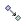), and the Snap to grids icon
(). Then, choose the Rectangle tool ().
Draw a rectangle 12 squares long by 4 squares wide. Draw another
rectangle 12 squares long by 3 squares wide with a space of 2 squares
between the two. Then, draw a line segment with the Pen tool starting at
the top right corner of the top rectangle going down to 1 square below the
lower right corner of the lower rectangle. Using the Style style tab
in the Fill and Stroke palette, give the line a white stroke and a thickness
of 1.5 pixels. We choose a dark purple color with hexadecimal code
0b0b28 to fill the rectangles.
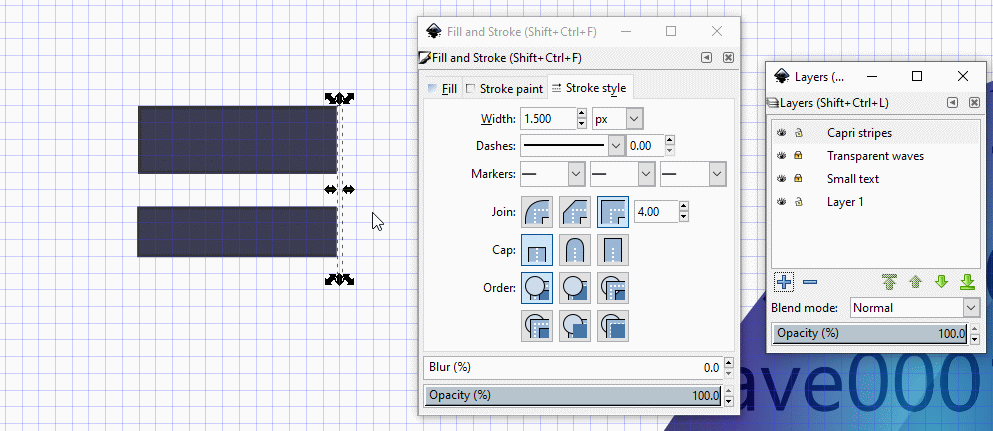
Creating a pattern template for decorative Capri
stripes.
Marquee-select the two rectangles and line segment.
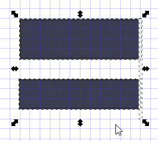
Group-selecting the pattern template for conversion into an
actual pattern.
Note that the line segment creates a bottommost space of 1 square in
width, which is what we want.
Choose Object > Pattern > Objects to
Pattern to convert the grouped items into a pattern. The pattern
you just created has been added to Inkscape’s pattern library
for this particular file. Choose View > Page Grid to turn
off the grid lines. Keep the pattern up, however. You will adjust the
thickness and angle of the stripes shortly and the pattern handles needed
to adjust pattern attributes will appear on the template.
Create a new top layer and label it Capri stripes.
With the Rectangle tool (), draw a rectangle around the three
wave image.
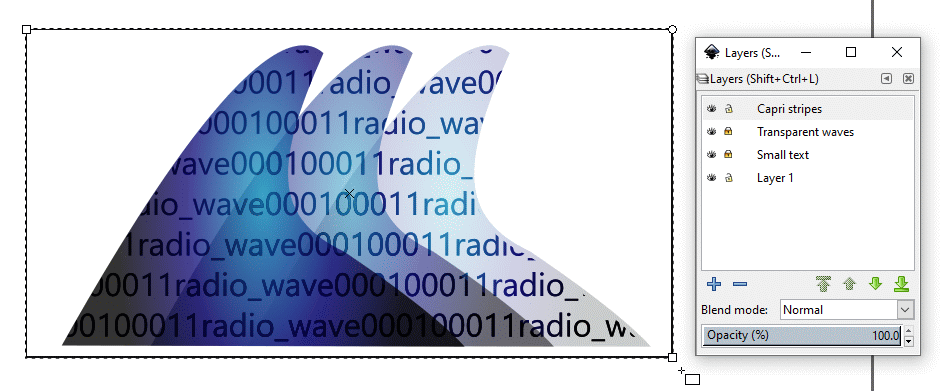
Draw a rectangle around the waves.
In the Fill and Stroke palette, Fill tab, click on the
Pattern icon. The pattern whose template you just created fills the
rectangle.
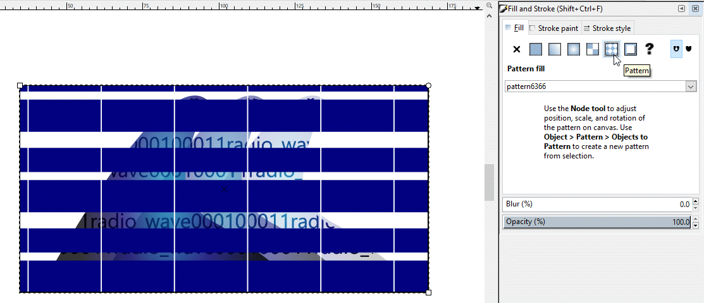
Filling the rectangle with the stripe pattern.
Press 5 to scale the artboard to the work window. Then, click
on the Node tool (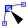).
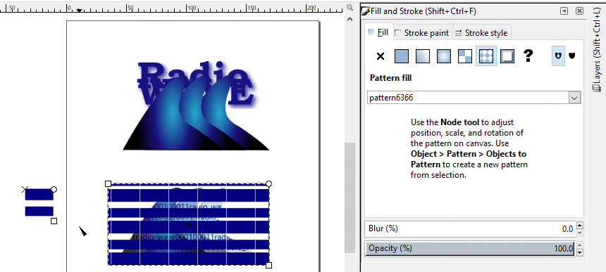
The artboard is reduced to size and pattern handles are
visible on the template.
The stripes need to be rescaled so they are thinner and angled at
45°. You use the pattern handles to accomplish these two
adjustments.
Pattern handles and their descriptions.
Rescale the stripe so they are thinner. With the Node tool (), drag the
Translation handle toward the center of the pattern template until
the stripes are of a satisfactory thinness. Release the mouse button to set
the scale. We set the stripe thickness at about the same thicknes of an
underlying line of text.
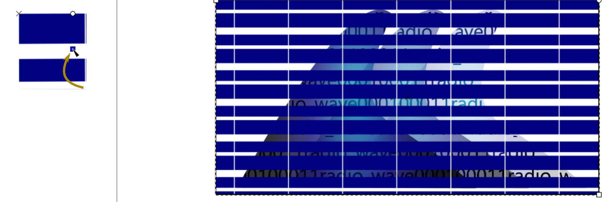
Rescaling the stripes.
Rotate the stripes by 45°. While pressing the <Ctrl> key,
drag the Rotation handle anticlockwise until the stripes are angled
at 45°. By pressing the <Ctrl> key, you can rotate objects by
15° increments, just like the rotation handles that appear when you click
twice on an object with the Select tool. The Rotation handle turns blue
to show that it is in use. It turns red when you release the mouse to
indicate that you can still manipulate it.
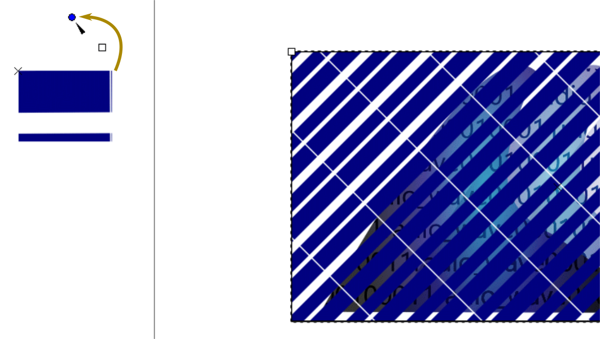
Rotating the stripes.
In the Layers panel, set the Opacity (%) to 50 percent
and choose Color Burn for the Blend mode.
Set the Opacity to 50 percent and Blend
mode to Color Burn.
You will now clip the image. Create a new top layer and label it
Mask.
Click on the Layer 1 layer bar. Group-select the three waves
and duplicate them (<Ctrl>-D). You can optionally group them
(<Ctrl>-G) and move them off to the side.
Press <Shift>-<PgUp> 4 times to move the waves into the
Mask layer.
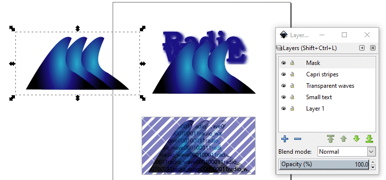
Move the duplicated waves into the Mask layer. (They have also
been grouped.)
If the Snap Controls Bar isn’t visible, choose View
> Show/Hide > Snap Controls Bar. Select the Enable
Snapping (%) icon (), the Snap nodes, paths, and
handles icon (), and the Snap cusp nodes, incl.
rectangle corners icon (). The Snap cusp nodes tool () allows you to snap corners and sharp angles of an object to points you
choose as anchor points for fine positioning.
Select and move the duplicated three waves (grouping them might be a wise
thing to do here) so they lie directly ontop and topmost of the wave-text
artwork.
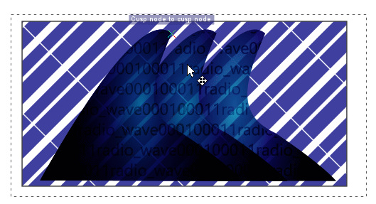
Putting the clipping mask into place.
With the mask in place, choose Object > Clip >
Set. The clipping "cookie cutter" cuts through all the underlying
layers and gives us a cleanly cut “cookie”. Note and remember:
the clipping mask lies above the artwork that is to be clipped.
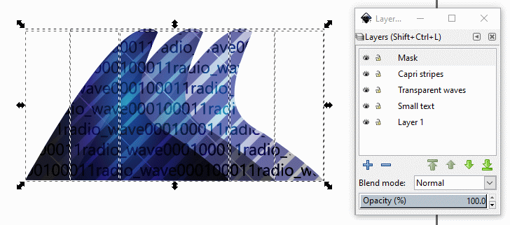
Clipping done.
Deselect the artwork and File > Save.
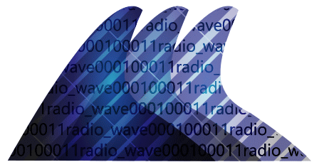
Clipped artwork.
You will now use the original three waves in the text-wave artwork to
position the clipped artwork you just created under the large logo text with
precision.
With the Snap Controls Bar and tools still active that you used
earlier (Enable Snapping (%) icon (),
the Snap nodes, paths, and handles icon (), and the Snap cusp nodes, incl. rectangle corners icon ()), group-select the clipped artwork and drag it up to cover the original
three waves. Let the snapping tools guide you as you make fine adjustments to
positioning.
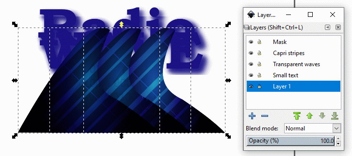
Move the clipped artwork up to cover the original three
waves.
It is now time to delete the original three waves. Lock all the layers
except for Layer 1 at the bottom of the stack where the original waves
are located. Marquee-select the three waves. Press the <Delete> or
<Del> key.
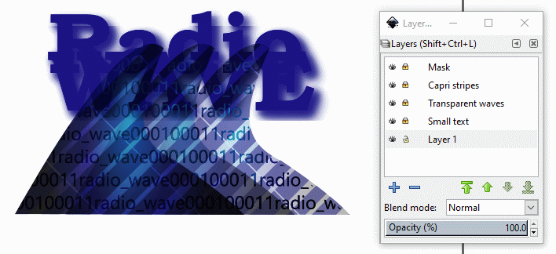
Delete the original three waves.
The only object left in Layer 1 is the logo text. You will move
Layer 1 to the top of the stack. Click on the Raise current layer to
the top icon () to put Layer 1 at the
top of the stack. The text has 100% opacity so it partially hides the clipped
artwork situated underneath it in the stacking order.
The logo text layer Layer 1 is topmost in the stacking
order.
The last touch-up task involves resizing the logo text and centering
it. As you can see, the two lines of text overlap. They need to be separate
for legibility’s sake. The fix is easy to accomplish.
With Layer 1 still selected (reselect it if it has been deselected),
click on the Text tool ().
Select the logo text. The font is Bookman Old Style Semi-Bold, as you can
see in the Text Tool Control Bar ().
If the size is different from 89 pt, change it to 89. Change the leading
to 69% if it is different. 89 pt is a good size for the artwork and a 69%
leading separates the two lines of text from each other.
Click on the Center align icon () in the
Text Tool Control Bar.
File > Save and File > Close.
Finished artwork.
You have just concluded a tutorial where you became more closely acquainted
with transparency and color blending tools, and with their use in combination.
You also learned that the clipping tool “cookie-cuts” through
multiple layers to modify the borders of your artwork.
Try out different fonts for the logo text and different blending modes.
Rearrange the layers to get different results. A layer is the computer graphic
equivalent of tracing paper. Just as you can change the order in which you can
stack tracing paper as you create a piece of artwork, so can you change the
stacking order of layers as you try out different ideas. They exist to help you
develop and fine-hone your skills.
Review Questions
What is the difference between transparency and opacity?
What is a blending mode and how is it applied?
Can transparency and color blending be combined?
Review Answers
Transparency and opacity are opposites of each other. Transparency
has to do with how much you can see through an object (how transparent it is);
opacity has to do with how much you can’t see through an object, or how
opaque it is.
Blending modes allow you to vary the way that colors in objects
interact or blend with the underlying objects. Modes can be selected from the
Blend mode dropdown menu in the Layers palette.
Yes, transparency and color blending can be combined to produce a
broad range of design effects, such as images produced with stained glass,
tracing paper, lighting effects, and more.


 ) to reduce the view of the finished artwork,
adjust the window size, and leave it on your screen as you work. (Use the
mouse wheel with and without pressing the <Shift> key to move the
artwork where you want it in the window.) If you don’t want to leave
the image open, choose File > Close.
) to reduce the view of the finished artwork,
adjust the window size, and leave it on your screen as you work. (Use the
mouse wheel with and without pressing the <Shift> key to move the
artwork where you want it in the window.) If you don’t want to leave
the image open, choose File > Close.{kind=link}

 ) in the Tool Controls
Bar. The text moves to the top of the wave-text stack, ready to be used as
a mask. The waves are positioned underneath. They are visible if you choose
View > Display mode > Outline.
) in the Tool Controls
Bar. The text moves to the top of the wave-text stack, ready to be used as
a mask. The waves are positioned underneath. They are visible if you choose
View > Display mode > Outline.
 ), the Snap nodes, paths, and
handles icon (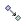), and the Snap to grids icon
(). Then, choose the Rectangle tool (
), the Snap nodes, paths, and
handles icon (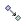), and the Snap to grids icon
(). Then, choose the Rectangle tool ( ).
).

 ) to put Layer 1 at the
top of the stack. The text has 100% opacity so it partially hides the clipped
artwork situated underneath it in the stacking order.
) to put Layer 1 at the
top of the stack. The text has 100% opacity so it partially hides the clipped
artwork situated underneath it in the stacking order.
 ).
). ) in the
Text Tool Control Bar.
) in the
Text Tool Control Bar.